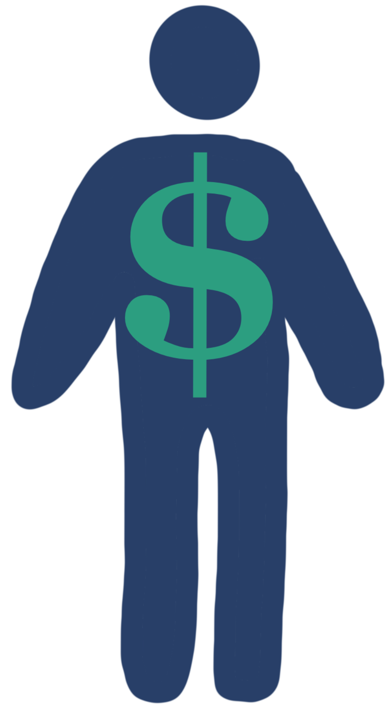

Behavioural Surplus
When data collected goes beyond what is strictly necessary for a product or service.
Corporate marketing departments have continuously upgraded their techniques for studying and knowing customers long before the internet.
While surveillance isn't new, digital technology has dramatically expanded its scope and sophistication.
Surveillance capitalists claim human experience as free raw material for the taking, bypassing individual rights or awareness.
This collected user data is the raw material used to predict and sell future behaviours.

Users are not the "customers" of surveillance capitalism; instead, they are the sources of crucial surplus.
The products and services offered by surveillance capitalism are merely the "hooks" that lure users into extractive operations.
...
“Industrial capitalism transformed nature’s raw materials into commodities, and surveillance capitalism lays its claims to the stuff of human nature for a new commodity invention.”
“We are no longer the subjects of value realization. Nor are we … the ‘product’ of Google’s sales. Instead, we are the objects from which raw materials are extracted and expropriated for Google’s prediction factories.”
- Shoshana Zuboff (2019)